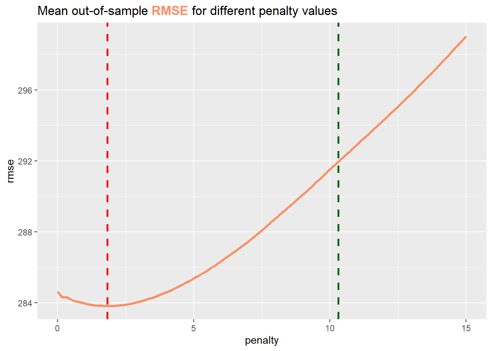
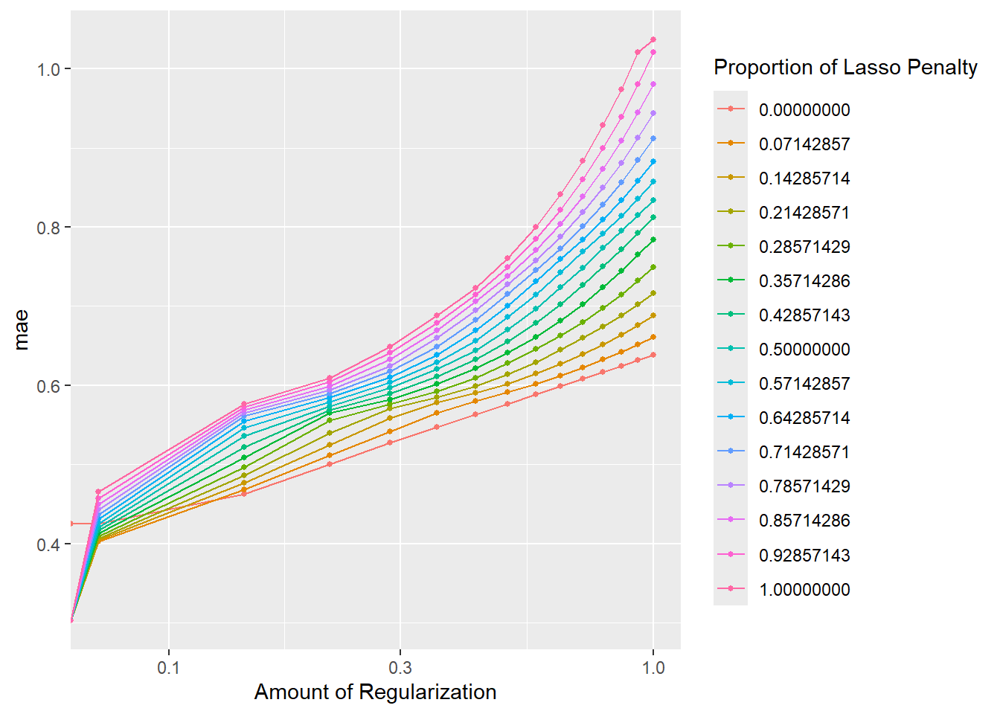

library("tidyverse")
library("tidymodels")
library("glmnet")3 Regularization
The goal of this exercise session is to review different regularization techniques, both, in theory and application. We start out by briefly reviewing ordinary least squares (OLS) estimation and quickly move on to a more in-depth analysis of ridge and lasso regression.
4 Exercises
Warning: package 'ggtext' was built under R version 4.4.14.1 Exercise 1: Loss functions in the context of OLS, ridge, and lasso regression
In Statistics I/II, we learned that OLS is the cornerstone of linear regression analysis. It allows us to explore and quantify the relationship between the response variable and the regressors in a relatively simple but meaningful way. We can extend the idea of a simple linear regression by adding a penalty term to the loss function we want to minimize. This process is called regularization and has been introduced in the lecture in terms of ridge and lasso regression.
The goal of this initial exercise is to review some theoretical aspects of OLS, ridge, and lasso regression.
4.1.1 Exercise 1a : OLS
Consider a simple linear model, with a quantitative response variable \(Y\) and a single predictor \(X\). The simple linear model then assumes (among other things) that there is approximately a linear relationship between \(Y\) and \(X\), i.e.,
\[ Y \approx \beta_0 + \beta_1 X. \]
with unknown coefficients \(\beta_0,\beta_1\). In order to obtain the best estimate \(\beta_0\) and \(\beta_1\) for a given sample we can minimize the MSE
\[ \begin{equation} \min_{\beta_0,\beta_1} MSE = \frac{1}{N}\sum_{n=1}^{N} (y_n - (\beta_0 + \beta_1 x_n))^2 \end{equation} \]
where \(N = \mathrm{length(Y)}\), \(y_1,…,y_N\) is a realized sample of \(Y\), and \(x_1,…,x_N\) is a realized sample of \(X\).
Show, that
\[ \begin{align*} \hat \beta_1 &= \frac{\sum_{n=1}^N (x_n - \bar x)(y_n-\bar y)}{\sum_{n=1}^{N}(x_n-\bar x)^2}\\ \hat\beta_0 &= \bar y - \hat\beta_1\bar x. \end{align*} \]
with \(\bar x = \frac{1}{N}\sum_{n=1}^{N}x_n\) and \(\bar y = \frac{1}{N}\sum_{n=1}^{N}y_n\) minimizes the minimization problem above. You can assume that the critical points calculated using the partial derivatives are in fact minima and that \(\sum_{n=1}^{N}(x_n-\bar x)^2\neq 0\).
Solution
First, calculate the partial derivatives of
\[ L(\beta_0,\beta_1) = \frac{1}{N}\sum_{n=1}^{N} (y_n - (\beta_0 + \beta_1 x_n))^2 \tag{4.1}\]
with respect to \(\beta_1\) and \(\beta_0\).
\[ \begin{align*} \frac{\partial}{\partial \beta_0} L(\beta_0,\beta_1) &= \frac{1}{N}\sum_{n=1}^{N} -2(y_n-(\beta_0 + \beta_1x_n))\\ &= -2\bar y + 2\beta_0 +2\beta_1 \bar x \\ &\overset{!}{=}0 \\ \frac{\partial}{\partial \beta_1} L(\beta_0,\beta_1) &= \frac{1}{N}\sum_{n=1}^{N} -x_n(2(y_n-(\beta_0+\beta_1x_n))) \\ &= -2\overline{xy} + 2\frac{1}{N}\sum_{n=1}^{N} x_n\beta_0+\beta_1x_n^2\\ &= -2\overline{xy} + 2\beta_0 \bar x + 2\beta_1 \overline{x^2}\\ &\overset{!}{=}0 \end{align*} \]
Solving the first term for \(\beta_0\) yields
\[ \beta_0 = \bar y - \beta_1\bar x. \]
In order to solve the second term for \(\beta_1\) we can utilize this newly acquired representation of \(\beta_0\):
\[ \begin{align*} -2\overline{xy} + 2\beta_0 \bar x + 2\beta_1 \overline{x^2} = -2\overline{xy} + 2(\bar y - \beta_1\bar x) \bar x + 2\beta_1 \overline{x^2} \overset{!}{=}0. \end{align*} \]
Then,
\[ \begin{align*} -2\overline{xy} + 2(\bar y - \beta_1\bar x) \bar x + 2\beta_1 \overline{x^2} &= -2\overline{xy} + 2\bar y \bar x- 2\beta_1\bar x^2+ 2\beta_1 \overline{x^2}\\ &\overset{!}{=} 0. \end{align*} \]
This can easily be solved for \(\beta_1\), which yields
\[ \beta_1 = \frac{\sum_{n=1}^N (x_n - \bar x)(y_n-\bar y)}{\sum_{n=1}^{N}(x_n-\bar x)^2}. \]
Note, that
\[ \begin{align*} \sum_{n=1}^N (x_n - \bar x)(y_n-\bar y) &= \sum_{n=1}^N x_n y_n -\bar xy_n-x_n\bar y + \bar x \bar y\\ &= N(\overline{xy} - \bar x\bar y - \bar x \bar y + \bar x \bar y)\\ &= N(\overline{xy}-\bar x\bar y) \end{align*} \]
and
\[ \begin{align*} \sum_{n=1}^{N}(x_n-\bar x)^2 &= \sum_{n=1}^{N}x_n^2 - 2x_n\bar x + \bar x^2\\ &= N(\overline{x^2} - 2\bar x ^2 + \bar x^2)\\ &= N(\overline{x^2} - \bar x ^2) \end{align*} \]
4.1.2 Exercise 1b: Ridge and lasso regression
Consider a linear model, where there is a quantitative response variable \(Y\) and a predictor \(X = (1, X_1,...,X_k)\), i.e. there are \(k\in\mathbb{N}\) different features. The linear model then assumes (among other things) that there is approximately a linear relationship between \(Y\) and \(X\), i.e.,
\[ Y \approx \beta_0 + \beta_1 X_1 + ... +\beta_k X_k. \]
with unknown coefficients \(\beta_0,...,\beta_k\).
In the lecture, we have already seen that the loss function for ridge and lasso regression is given by
\[ \mathcal{L}_{\mathrm{ridge}}(\beta,\lambda) = \sum_{n=1}^{N} (y_n - \hat{y}_n)^2 + \lambda \sum_{i=0}^{k} \beta_j^2 \]
and
\[ \mathcal{L}_{\mathrm{lasso}}(\beta,\lambda) = \sum_{n=1}^{N} (y_n - \hat{y}_n)^2 + \lambda \sum_{i=0}^{k} |\ \beta_j\ |, \]
where \(\lambda \in [0,\infty)\) .
4.1.2.1 Exercise 1b i:
Explain the following statement from the lecture:
“Ridge regression reduces the variance, but introduces bias.”
Solution:

The key point of this quote addresses the bias-variance trade-off.
From the lecture, we know that
\[ \hat \beta_{\mathrm{ridge}}(\lambda) = \frac{\hat\beta_{\mathrm{OLS}}}{1+\lambda} \]
if the features are standardized and orthogonal.
- Bias:
By growing the parameter \(\lambda\), the parameter \(\hat\beta_{\mathrm{OLS}}\) shrinks. In other words, the regularization term encourages the model to have smaller coefficient values, which means it may not fit the training data as closely as an unregularized model. This means that systematic errors are introduced to the model’s predictions. - Variance:
By growing the parameter \(\lambda\), we reduce variance by shrinking the coefficients’ values, which discourages them from taking very high values. This effectively constrains the model’s complexity and makes it less prone to overfitting.
4.1.2.2 Exercise 1b ii:
Consider the following statements and decide whether ridge or lasso regression should be applied.
You are building a predictive model for stock price prediction, and you have a large number of potential predictors. Some of these predictors might be highly correlated with each other.
You are modeling housing prices, and you want to prevent the model from overfitting to the training data.
You are working on a marketing project where you have a dataset with a mix of numerical and categorical features. You need to build a regression model to predict customer lifetime value.
Solution:
Lasso regression should be used in this scenario because it can perform feature selection by driving some coefficients to zero. This is especially helpful if there are many features as it helps in dealing with correlated predictors.
Ridge regression is more suitable because it provides a smoother and more continuous shrinkage of coefficients, which reduces the risk of overfitting.
Lasso regression might be a more suitable choice as it can perform feature selection and even drive the coefficient for some categorical values to 0.
4.1.2.3 Exercise 1b iii:
Come up with a scenario where a mixed model, i.e. an elastic net might be a good choice.
Solution:
A healthcare dataset is given to predict a patient’s readmission probability with numerous correlated features. The aim is to build a model that predicts accurately, selects the most relevant features, and mitigates multicollinearity. Here, an elastic net is the preferred choice because it combines Ridge and Lasso regression, effectively handling multicollinearity while performing feature selection, making it ideal for this complex healthcare dataset.
4.2 Exercise 2: Another lesson on data preparation and model specification
In this exercise, we will revisit the rent dataset, but instead of looking at rent prices in Augsburg, we will now consider rent prices in Munich. We will briefly prepare the dataset and create a recipe similar to Exercise 2b ii on Sheet 02 but in a more sophisticated fashion.
data_muc <- read.csv("data/data_muc_filtered.csv")4.2.1 Exercise 2a: Data preparation
Explain how we preprocess our data in the following code chunk.
data_muc_filtered <- data_muc %>%
select(!c("X","serviceCharge","heatingType","picturecount","totalRent",
"firingTypes","typeOfFlat","noRoomsRange", "petsAllowed",
"livingSpaceRange","regio3","heatingCosts", "floor",
"date", "pricetrend")) %>%
na.omit %>%
mutate(
interiorQual = factor(
interiorQual,
levels = c("simple", "normal", "sophisticated", "luxury"),
labels = c("simple", "normal", "sophisticated", "luxury"),
ordered = TRUE
),
condition = factor(
condition,
levels = c("need_of_renovation", "negotiable","well_kept","refurbished",
"first_time_use_after_refurbishment",
"modernized", "fully_renovated", "mint_condition",
"first_time_use"),
ordered = TRUE
),
geo_plz = factor(geo_plz)
) %>%
mutate_if(is.logical, ~ as.numeric(.)) %>%
filter(baseRent <= 4000, livingSpace <= 200)
Solution:
- We first select all the columns we want to use by removing the remaining columns using
select(!c( … ). - Then, we remove all the
NAvalues. - Next, we mutate our data as follows:
- We convert the feature
interiorQualto a factor (basically Rs encoding for ordinal features), which allows us for example, to value a luxuryinteriorQualhigher than a simpleinteriorQual. We set the levels and labels to the same name and pass the argumentTRUEto theorderedoption to indicate that we have indeed an ordinal feature. - The same procedure is applied to the
conditionof the flat. - Instead of setting specific levels for the zip codes, we simply convert them to factors in order define nominal values. Note, that in this case we also do not set the
orderedparameter, since the sheer value of the zip code in terms of their numerical value shouldn’t influence the dependent variabletotalRent.
- We convert the feature
- In the second to last step we convert all logical values to numeric values. Here,
TRUEcorresponds to1andFALSEto0respectively. - The last step concerns some “quick and dirty” data cleaning where we remove any flat that costs more than 4000 EUR or is bigger than 200 \(m^2\).
4.2.2 Exercise 2b: Setting up resampling
Similar to exercise Exercise 2a: i-iii on Sheet 02, create
an initial split object called
splitwith thedata_muc_filteredtibble,a training set called
data_trainand a test set calleddata_testusing thetrainingandtestingfunctions respectively, andan instance
foldsof thevfold_cvclass with the parametersdata = data_trainandv = 10.
set.seed(1)
###################
## Continue here ##
###################set.seed(1)
split <- initial_split(data_muc_filtered)
data_train <- training(split)
data_test <- testing(split)
folds <- vfold_cv(data_train, v = 10)4.2.3 Exercise 2c: Setting up a recipe
On the last exercise sheet, we created a simple recipe, only containing the formula we wanted to use on our simple linear model. This process can be extended by adding a multitude of different steps for preprocessing the underlying training data.
For each of the following updates and steps, explain their purpose and what they aim to achieve.
rec_lm <- recipe(
formula = baseRent ~.,
data = data_train
) %>%
update_role(scoutId, new_role = "ID") %>%
step_ordinalscore(interiorQual, condition)%>%
step_dummy(geo_plz)%>%
step_zv(all_predictors()) %>%
step_normalize(all_predictors())
Solution:
We first set up the recipe by specifying the formula and data used in each step. Note, that by using the expression
baseRent ~.we indicate that we want to fit every variable in thedata_traindataset on the dependent variablebaseRent.The
update_rolefunction assigns the featurescoutIdto a new role calledID. By doing so, the featurescoutIdis no longer used as a predictor and will no longer influence our model. We will still keep it in the loop, however in case we want to access a specific listing that is only accessible using the uniquescoutId.We then convert the factors
interiorQualandconditionto ordinal scores by using thestep_ordinalscorefunction. The translation uses a linear scale, i.e. for the featureinteriorQualthe levelsimplecorresponds to the value0andluxurycorresponds to the value4.Afterward, we create dummy variables for each zip code. Here, every zip code in the
data_trainis treated as a new variable. Thus, we are basically replacing the featuregeo_plzwith 82 new features, each representing one of the 82 zip codes available in the training data.The
step_zv(zero variance filter) function removes all variables that contain only a single value. If, for example, a zip code does not occur in any of the entries ofdata_train, the whole column will be set to zero and effectively not affect our model. Thus it is in our best interest to remove those columns.In the last step, we normalize all predictors, i.e., transform them in a way that they have a standard deviation of 1 and mean zero.
4.3 Exercise 3: Regularizing a linear model using lasso, ridge, and mixed models
In this last exercise we will make use of the previously performed data preparation by modeling a workflow and selecting the best model based on some performance metrics we will specify later.
4.3.1 Exercise 3a: Setting up and evaluating Lasso Regression
The approach is similar to Exercise 2c on Exercise Sheet 02, where I demonstrated how to train multiple models. So if you get stuck in some of the exercises you should revisit this sheet and try to reproduce the steps this way.
While this sub-exercise will seem kind of lengthy again, the other sub-exercises can be solved a lot quicker, since we can recycle many of the objects we create throughout this sub-exercise.
4.3.1.1 Exercise 3a i:
First, create an instance of the linear_reg class called model_lasso with parameters penalty = tune() and mixture = 1.0. By setting the penalty parameter to tune(), we specify that the penalty is a tuning parameter that we want to optimize later. By setting the mixture parameter to 1.0 we specify that the model should be a pure lasso regression (setting it to 0.0 indicates that we are using a pure ridge regression). If calling the model model_lasso results in the same output as below, you solved the exercise correctly.
model_lasso <- linear_reg(penalty = tune(), mixture = 1.0)
model_lassoLinear Regression Model Specification (regression)
Main Arguments:
penalty = tune()
mixture = 1
Computational engine: lm 4.3.1.2 Exercise 3a ii:
Since we have set the penalty value to tune() we have to specify a grid in which want to check for the best value. We can pass the grid values to our model by using the set_engine function.
penalty <- seq(0, 15, length.out = 100)Update the model model_lasso by completing the following Code snippet. Fill the gap by piping model_lassoto the set_engine function where you pass the parameters engine = "glmnet" and path_values = penalty. If you are interested in why we specifically have to use the path_values argument, you can check out this manual.
model_lasso <- model_lasso %>%
###################
## Continue here ##
###################You can check whether you have successfully updated the model by calling model_lasso and comparing your output to the one below. If they coincide you have solved the exercise correctly.
model_lasso <- model_lasso %>%
set_engine(engine = "glmnet", path_values = penalty)
model_lassoLinear Regression Model Specification (regression)
Main Arguments:
penalty = tune()
mixture = 1
Engine-Specific Arguments:
path_values = penalty
Computational engine: glmnet 4.3.1.3 Exercise 3a iii:
Similarly to Exercise 2c i on Exercise Sheet 02, create a workflow called glmnet_wflow by creating an instance of the workflow class without passing any additional arguments, piping it to the add_model function with model_lasso as an argument, and finally piping it to the add_recipe function with rec_lm as an argument.
You can check whether you have successfully set up the workflow by calling glmnet_wflow and comparing your output to the one below. If they coincide you have solved the exercise correctly.
glmnet_wflow <-
workflow() %>%
add_model(model_lasso) %>%
add_recipe(rec_lm)
glmnet_wflow══ Workflow ════════════════════════════════════════════════════════════════════
Preprocessor: Recipe
Model: linear_reg()
── Preprocessor ────────────────────────────────────────────────────────────────
4 Recipe Steps
• step_ordinalscore()
• step_dummy()
• step_zv()
• step_normalize()
── Model ───────────────────────────────────────────────────────────────────────
Linear Regression Model Specification (regression)
Main Arguments:
penalty = tune()
mixture = 1
Engine-Specific Arguments:
path_values = penalty
Computational engine: glmnet 4.3.1.4 Exercise 3a iv:
Given the following metric set and the previously created workflow, we can now finally train our lasso model.
multi_metric <- metric_set(rsq,rmse)In order to do so, create an object called glmnet_res (res stands for resampling in that context) by assigning the glmnet_wflow object to it and piping it to the tune_grid function. Recall, that this is the exact same process as in Exercise 2c i on Sheet 02. As arguments for the tune_grid function, you have to pass tibble(penalty), multi_metric, and folds.
You can check whether you have successfully trained the model by calling head(glmnet_res) and comparing your output to the one below. If they coincide you have solved the exercise correctly.
glmnet_res <-
glmnet_wflow %>%
tune_grid(
grid = tibble(penalty),
metrics = multi_metric,
resamples = folds
)
glmnet_res# Tuning results
# 10-fold cross-validation
# A tibble: 10 × 4
splits id .metrics .notes
<list> <chr> <list> <list>
1 <split [1471/164]> Fold01 <tibble [200 × 5]> <tibble [0 × 3]>
2 <split [1471/164]> Fold02 <tibble [200 × 5]> <tibble [0 × 3]>
3 <split [1471/164]> Fold03 <tibble [200 × 5]> <tibble [0 × 3]>
4 <split [1471/164]> Fold04 <tibble [200 × 5]> <tibble [0 × 3]>
5 <split [1471/164]> Fold05 <tibble [200 × 5]> <tibble [0 × 3]>
6 <split [1472/163]> Fold06 <tibble [200 × 5]> <tibble [0 × 3]>
7 <split [1472/163]> Fold07 <tibble [200 × 5]> <tibble [0 × 3]>
8 <split [1472/163]> Fold08 <tibble [200 × 5]> <tibble [0 × 3]>
9 <split [1472/163]> Fold09 <tibble [200 × 5]> <tibble [0 × 3]>
10 <split [1472/163]> Fold10 <tibble [200 × 5]> <tibble [0 × 3]>4.3.1.5 Exercise 3a v:
Consider the following plot that depicts the mean out-of-sample RMSE for different penalty values. The dashed lines represent the optimal penalty and the largest value of the penalty such that the mean MSE is within one standard error of the optimum.
Decide and present an argument for which line is the optimal penalty. Furthermore, explain why we would choose the non-optimal penalty in lasso regression.

Solution:
The red line depicts the optimal penalty, since it intersects the minimum of the RMSE. Especially in Lasso regression an optimal penalty parameter is often smaller than we desire. The effect of a smaller penalty parameter is, that we do not eliminate as many features as we anticipated. By increasing the penalty we can effectively overcome this problem as more features are eliminated. A disadvantage however is, that we sacrefice out-of-sample performance, as the newly chosen penalty is not optimal anymore.
4.3.1.6 Exercise 3a vi:
Given all the different models created with the penalty grid we specified in Exercise 3a ii, how can we select the best model with respect to a given metric? It turns out that this is rather simple! Explain each of the steps below and recreate the result for the metric rsq.
glm_res_best<- glmnet_res %>%
select_by_one_std_err(metric = "rmse", desc(penalty))
#optionally, the method below can be chosen as well
# select_best(metric = "rmse")
best_penalty <- glm_res_best$penalty
last_glm_model <- linear_reg(penalty = best_penalty, mixture = 1.0) %>%
set_engine("glmnet")
last_glm_wflow <- glmnet_wflow %>%
update_model(last_glm_model)
last_glm_fit <-
last_glm_wflow %>%
last_fit(split)
Solution:
- By using the
select_bestfunction we can directly select the best model with respect to a passed metric (in this casermse). The return value is a combination of the tuning parameter and the corresponding model that performed best. - We save the optimal penalty which we later want to use when creating our final best model.
- We then create a new model called
last_glm_modelwith the previously selected optimal penalty. - This last model can then be incorporated into the already existing workflow
glmnet_wflowby simply using theupdate_modelfunction, where we pass the newly createdlast_glm_model. - After updating the workflow we then have to fit our final model. The
last_fitfunction where we pass the whole training and testing splitsplit, fits the model on the whole training split and automatically evaluates it on the test split. Note, that before this point, the model has never observed any sample of the test set.
glm_res_best<- glmnet_res %>%
select_by_one_std_err(metric = "rsq", desc(penalty))
# select_best(metric = "rsq")
best_penalty <- glm_res_best$penalty
last_glm_model <- linear_reg(penalty = best_penalty, mixture = 1) %>%
set_engine("glmnet")
last_glm_wflow <- glmnet_wflow %>%
update_model(last_glm_model)
last_glm_fit <-
last_glm_wflow %>%
last_fit(split)Et voilà, we have now created our final model last_glm_fit based on the best value for the penalty with respect to the rmse or rsq metric.
4.3.1.7 Exercise 3a vii:
A question that surely arises is, how we can see which of the the coefficients were set to 0 by the lasso regression.
By piping the last_glm_fit model to the extract_fit_parsnip function and piping the result to the tidy function, we can effectively extract the parameters for our final mode. Complete the following sequence of operations to filter for all the variables set to 0. Which variables were set to 0?
last_glm_fit %>%
extract_fit_parsnip %>%
tidy %>%
#################
##Continue Here##
#################last_glm_fit %>%
extract_fit_parsnip %>%
tidy %>%
filter(estimate > 0) %>%
arrange(desc(estimate))# A tibble: 31 × 3
term estimate penalty
<chr> <dbl> <dbl>
1 (Intercept) 1648. 10.5
2 livingSpace 553. 10.5
3 interiorQual 120. 10.5
4 geo_plz_X80538 43.9 10.5
5 geo_plz_X80804 40.6 10.5
6 newlyConst 38.4 10.5
7 lift 38.2 10.5
8 condition 34.5 10.5
9 hasKitchen 34.5 10.5
10 geo_plz_X80333 33.7 10.5
# ℹ 21 more rowslast_glm_fit %>%
extract_fit_parsnip %>%
tidy %>%
filter(estimate == 0) %>%
select(term)# A tibble: 35 × 1
term
<chr>
1 balcony
2 noRooms
3 garden
4 geo_plz_X80339
5 geo_plz_X80635
6 geo_plz_X80636
7 geo_plz_X80637
8 geo_plz_X80639
9 geo_plz_X80643
10 geo_plz_X80673
# ℹ 25 more rows4.3.2 Exercise 3b: Ridge Regression
In this last exercise, we want to reap the fruits of our labor by easily training a ridge regression model.
4.3.2.1 Exercise 3b i:
Consider the following code snippet which is all we need for training a new model. Explain each of the following steps which are performed to train the new model.
model_ridge <- linear_reg(penalty = tune(), mixture = 0.0) %>%
set_engine(engine = "glmnet", path_values = penalty)
glmnet_wflow <- glmnet_wflow %>%
update_model(model_ridge)
glmnet_res <-
glmnet_wflow %>%
tune_grid(
grid = tibble(penalty),
metrics = multi_metric,
resamples = folds
)
Solution:
We first define a model called
model_ridge, which is a simple linear model but instead of setting themixtureparameter to1as we did in the lasso regression, we now set it to0in order to indicate that we want to fit a ridge regression model. We then set the engine and path values for our grid to the same values as we did for the lasso regression model.By using the
update_modelfunction, we can pass our new model to the workflow object previously created and make sure that this model is indeed fitted in the next step.In the last step, we only have to pass out updated workflow
glmnet_wflowto thetune_gridfunction, which fits the model on all folds of the cross-validation across the penalty grid. By specifying themetricsoption, we also make sure that the specified metrics are saved.
4.3.2.2 Exercise 3b i:
Given the tibble ridge_metrics, create two plots, where you display both, the mean rmse and mean rsq of the model across all folds for different penalty values. Additionally, mark the optimal penalty value.
An example of what one of those plots could look like is below.
ridge_metrics <- glmnet_res %>% collect_metricsridge_metrics %>% filter(.metric == "rsq") %>%
ggplot(aes(x=penalty, y = mean)) +
geom_line(linewidth = 1.2, color = "red") +
geom_vline(aes(xintercept = penalty[which.max(mean)]),
color = "red",
linetype = "dotted",
linewidth = 1.2) +
theme(
plot.title = element_markdown(),
axis.title.y = element_markdown()
)+
labs(
title = "Average R<sup>2</sup> across all hold-out samples for different penalty values",
subtitle = "The dotted red line indicates where the maximum value is attained."
)+
scale_y_continuous(
name = " mean R<sup>2</sup>"
)